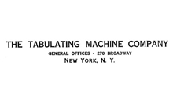

Ambition and thirst for power have a part but greed and greed alone is the reason for a man wanting to swell his ward.
Charles Ranlett Flint was born January 24, 1850 in Maine and later moved to New York City with his family.
In 1868, Charles Flint graduated from the Polytechnic Institute (New York University Tandon school of engineering), later in 1871, Charles Flint would later work in the shipping business under Gilchrest, Flint & Co., which would later become W.R. Grace & Co.
In 1876, Charles Ranlett Flint served as the Chilean consul in New York City. During that time, he was also the consul general for the U.S and Nicaragua and Costa Rica.
Charles Flint merged multiple companies in 1892 to from U.S Rubber. In 1899, he merged more companies like Adams Chewing Gum, Chiclets, Dentyne, and Beemans to form American Chicle. During the same year, he also merged more companies to form American Woolen.
In 1911, he formed The Tabulating Machine Company after stock acquisition of four companies. The Tabulating Machine Company would later become International Business Machines(IBM). Charles Ranlett Flint would later serve as the board of directors until 1930. Charles Flint would later retire the same year. IBM would later revolutionize the computing industry.
